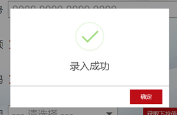
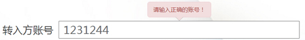

描述
根据使用场景和作用范围不同，提示可以分成功、警告、失败、等待
示意图
行为状态
1、常用提示 (根据其提示内容的多少来选择要素)

- 展现形式：弹出窗口（当前页面校验提示）；新建页面展示（完整业务流程校验提示）；
- 状态：可根据需求具有多种状态，例如：警告、提示、成功、失败等；
- 图标：88*88px
- 结果文本：（字体：微软雅黑；字号：30px；字色：#444444；）
- 辅助信息：灰色（字体：微软雅黑；字号：20px；字色：#666666；）；金额（字体：微软雅黑；字号：35px；字色：#bc0e17；金额字色可配置）
2、气泡提示 (根据其提示内容的多少来选择要素)

- 展现形式：气泡（控件校验提示）；
- 状态：可根据需求具有多种状态，例如：成功、警告、错误等；
- 结果文本：（字体：微软雅黑；字号：16px；色彩：同提示状态色彩保持一致，例:成功（绿色）；警告（橙黄色）；错误（红色）
- 弹出气泡是一个小型的弹出窗口，用于通知用户出现非关键性问题或控件处于某种特殊情况；
- 通常由图标、标题、正文文本组成，图标只有在相应的状态下才出现，弹出气泡带有一个尾部箭头以指示它的来源；
- 给出反馈信息的同时，不改变输入焦点；
- 陈述文本应告知用户如何做才能解决问题或恢复状态；
使用规范
根据提示内容和对用户的影响不同，提示可以分为不同状态：成功、警告、失败、等待。
成功
- 指用户操作完成系统需要对用户进行完成的提示信息，该类提示一定出现在事后。
- 会使用户感到心情放松、愉悦等，成功代表一个业务的终结，可以引导用户进行其它的操作等。